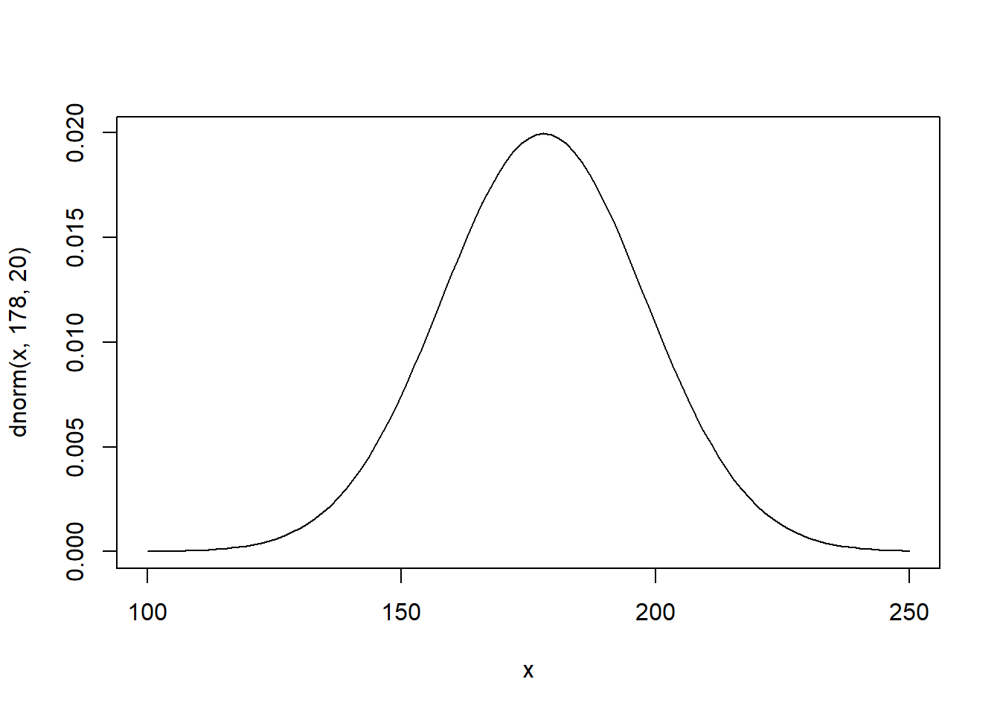
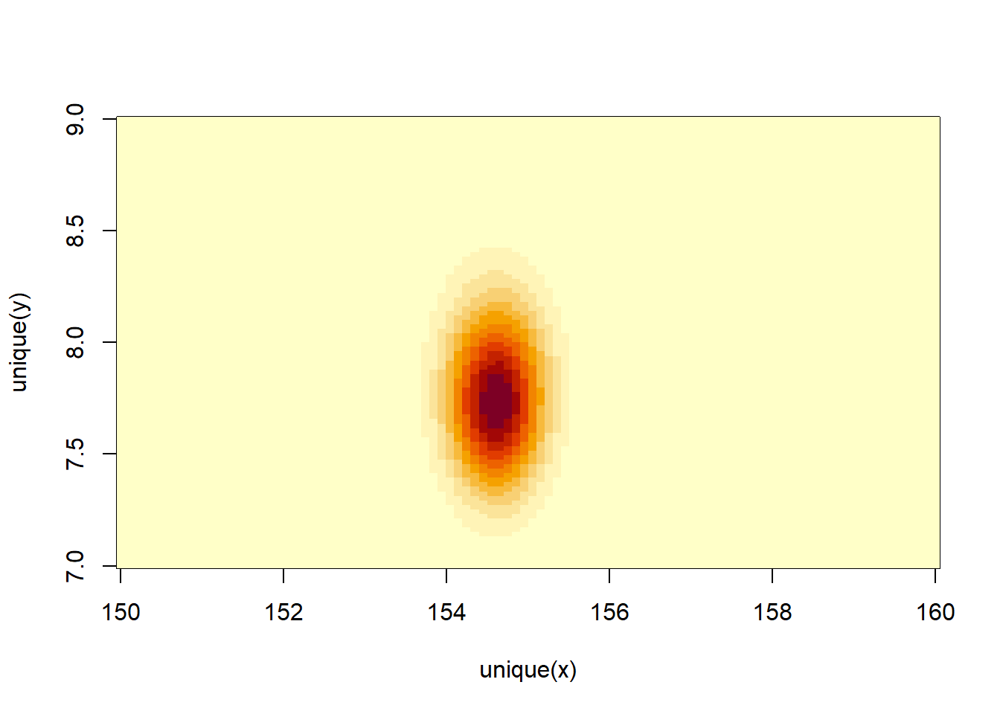
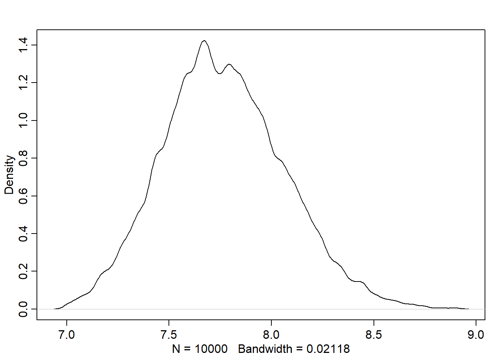

The following objects are masked from 'package:stats':
mad, sd, var
The following objects are masked from 'package:base':
%in%, match
Loading required package: parallel
rethinking (Version 2.40)
Attaching package: 'rethinking'
The following object is masked from 'package:stats':
rstudent
# given that the steps for each person is represented by a list of 16 random numbers# between -1 and 1:# run 1000 simulation of stepping left and right, and store the final result/positionpos <-replicate(1000, sum(runif(16,-1,1)))# plot the end positions around the half line of soccer fieldplot(pos)
# plot the density of the positionsplot(density(pos))
Normal by multiplication
(See the example on page 74) Note that the interaction between the growth deviations converges to Gaussian dist as long as the effect is small.
'data.frame': 544 obs. of 4 variables:
$ height: num 152 140 137 157 145 ...
$ weight: num 47.8 36.5 31.9 53 41.3 ...
$ age : num 63 63 65 41 51 35 32 27 19 54 ...
$ male : int 1 0 0 1 0 1 0 1 0 1 ...
# data summaryprecis(d, hist=FALSE)
mean sd 5.5% 94.5%
height 138.2635963 27.6024476 81.108550 165.73500
weight 35.6106176 14.7191782 9.360721 54.50289
age 29.3443934 20.7468882 1.000000 66.13500
male 0.4724265 0.4996986 0.000000 1.00000
The model and prior
Based on domain-specific information, we decide that the range of plausible human heights is \(178 \mp 40\). The std. deviation must be basically positive \(h_i \sim Normal(\mu, \sigma)\)
Given that the parameters are independent, the prior is:
\(Pr(\mu, \sigma) = Pr(\mu)Pr(\sigma)\)
Where:
\(\mu \sim Normal(178,20)\)
\(\sigma \sim Uniform(0, 50)\)
Let’s plot the priors: - Mean
curve(dnorm(x, 178, 20), from=100, to=250)

Std. deviation
curve(dunif(x, 0, 50), from=0, to=60)
Let’s simulate heights based on the priors. This is called the prior predictive simulation:
So far, the model is defined before showing it the data. We can change the prior \(\mu\) std. deviation to see how the model is sensitive to the prior choices that aren’t relying on scintific knowledge as we did.
Note how the result doesn’t make sense with negative and very large heights.
Grid approximation of the posterior distribution
Since we have 2 parameters, grid approx. method is not practical. However, we will try using it computing the log-likelihood:
# we will compute the approximation using the height data of persons over 18 y.o.d2 <- d[d$age >=18,]mu.list <-seq(from=150, to=160, length.out=100)sigma.list <-seq(from=7, to=9, length.out=100)# Create a Data Frame from All Combinations of Factor Variablespost <-expand.grid(mu=mu.list, sigma=sigma.list)# compute the log-likelihoodpost$LL <-sapply(1:nrow(post),function(i) sum (dnorm(d2$height, post$mu[i], post$sigma[i], log=TRUE) ))post$prod <- post$LL +dnorm(post$mu, 178, 20, TRUE) +dunif(post$sigma, 0, 50, TRUE)post$prob <-exp(post$prod -max(post$prod))contour_xyz(post$mu, post$sigma, post$prob)
image_xyz(post$mu, post$sigma, post$prob)

Sampling from the posterior
# generate random indexes of rowssample.rows <-sample(1:nrow(post), size=1e4, replace=TRUE, prob=post$prob)sample.mu <- post$mu[sample.rows]sample.sigma <- post$sigma[sample.rows]# this shows the most plausible combinations of mu and sigmaplot(sample.mu, sample.sigma, cex=0.5, pch=16, col=col.alpha(rangi2, 0.1))
Let’s check the shape of marginal posterior densities:
dens(sample.mu)
dens(sample.sigma)

Note that the density for sigma has a longer right tail
mean sd 5.5% 94.5%
mu 154.60282 0.4124339 153.945159 155.261959
sigma 7.72796 0.2908551 7.255576 8.187313
Comparing these values to the output from precis(m4.1), we found it very close.
plot(post)
Sampling the multivariate posterior w/o rethinking
The function extract.samples runs the following simulation that samples random vectors of multivariate Gaussian values. This simulation requires computing the variance-covariance matrix
It is an essential compnent in the quap algorithm.
It tells us how each parameter relates to every other parameter in the posterior distribution.
It can be factored into 2 elements:
Vector of variances for the parameters diag(vcov(model))
Correlation matrix that tells how changes in one parameter lead to correlated changes in the others cov2cor(vcov(model))
Linear prediction
Using the association between predictor variables and outcome variable, we want to predict the later. This is how linear regression works.
Linear model strategy: probabilistic approach
We tell the model (golem) the following: “Assume that the predictor variable has a constant and additive relationship to the mean of the outcome. Consider all the lines (formed by the combinations of parameter values) that relate one variable (or more) to the other. Rank all of these lines by plausibility, given these data.”
The resulted model is a posterior distribution
In the following example, we want to predict the height using the weight as a predictor variable. This code plot the data to use in model fitting:
We want to use the Gaussian model of height we built in the previous chapters but making the mean of height \(\mu_i\) is a function of weights where weight values are denoted by \(x\). Here is the model:
\(h_i \sim Normal(\mu_i, \sigma)\)
\(\mu_i = \alpha + \beta(x_i - \bar{x})\)
\(\alpha \sim Normal(178, 20)\)
\(\beta \sim Normal(0, 10)\)
\(\sigma \sim Uniform(0,50)\)
Notations:
\(\bar{x}\) is the mean of weights
\(x_i\) weight at row \(i\)
\(\mu_i\) the mean of heights are row \(i\)
\(h_i\) the height at row \(i\)
\(\alpha, \beta\) are parameters to learn
Note all relationships are Stochastic except the relationship between the height mean and weight.
The parameters are made up as devices that will help us to manipulate \(\mu\). Here is what each parameter does:
\(\alpha\) (intercept): represents the expected height when \(x_i=\bar{x}\)
\(\beta\) (slope): represents the rate of change in expectation when \(x_i\) changes by 1 unit
Priors
The unobserved variables are called parameters (\(\alpha, \beta, \sigma\)) and their distributions are called priors.
Each combination of parameter values implies a unique line
Let’s simulate the prior predictive distribution to see the possible lines
set.seed(2971)N <-100# 100 linesa <-rnorm(N, 178, 20)b <-rnorm(N, 0, 10)# prepare the canvas for plottingplot(NULL, xlim=range(d2$weight), ylim=c(-100,400), xlab="weight", ylab="height")abline(h=0, lty=2) # no one is shorter than zero!abline(h=272, lty=1, lwd=0.5) # the world's tallest personxbar <-mean(d2$weight)# simulate the possible linesfor (i in1:N) curve(a[i] + b[i]*(x-xbar), from=min(d2$weight),to=max(d2$weight),add=TRUE,col=col.alpha("black", 0.2))
As we can see, not all the lines seem to represent the relationship between weight and height for human. Negative relationship doesn’t make sense in this context.
We want to restrict \(\beta\) to positive numbers so we only get positive relationship. Therefore, we can define the prior as Log-Normal instead to enforce positive relationship:
\[
\beta \sim Log-Normal(0,1)
\]
b <-rlnorm(1e4, 0, 1)dens(b, xlim=c(-1,5), adj=0.1)
We can see the distribution is defined only on the positive beta values.
Now, let’s do the prior predictive simulation again with the new prior:
set.seed(2971)N <-100# 100 linesa <-rnorm(N, 178, 20)b <-rlnorm(N, 0, 1) # log-normal prior# prepare the canvas for plottingplot(NULL, xlim=range(d2$weight), ylim=c(-100,400), xlab="weight", ylab="height")abline(h=0, lty=2) # no one is shorter than zero!abline(h=272, lty=1, lwd=0.5) # the world's tallest personxbar <-mean(d2$weight)# simulate the possible linesfor (i in1:N) curve(a[i] + b[i]*(x-xbar), from=min(d2$weight),to=max(d2$weight),add=TRUE,col=col.alpha("black", 0.2))
Now, the result is much more sensible!
Finding the posterior distribution
The model is defined now along with the priors. We are now ready to build the posterior approximation using quap
library(rethinking)data("Howell1")d <- Howell1d2 <- d[d$age >=18,]xbar <-mean(d2$weight)# fit the modelm4.3<-quap(alist( height ~dnorm(mu, sigma), mu <- a + b * (weight-xbar), a ~dnorm(178, 20), b ~dlnorm(0, 1), sigma ~dunif(0, 50) ),data=d2)
To interpret the posterior, we can use either tables or plots. Plots gives more information about the posterior. However, let’s see the summary table:
precis(m4.3)
mean sd 5.5% 94.5%
a 154.6013671 0.27030766 154.1693633 155.0333710
b 0.9032807 0.04192363 0.8362787 0.9702828
sigma 5.0718809 0.19115478 4.7663786 5.3773831
We also need to see the covariance among the parameters by computing the variance-covariance matrix:
round(vcov(m4.3), 3)
a b sigma
a 0.073 0.000 0.000
b 0.000 0.002 0.000
sigma 0.000 0.000 0.037
We want to know the uncertainty around the mean of posterior in order to determine the confidence in the relationship between predictor and outcome, since the posterior we plot in the previous step is the MAP, which is the mean of many lines formed by the posterior.
Let’s see how the confident about the location of the mean changes based on data size. First, we will extract the first 10 cases and re-estimate the model:
N <-10dN <- d2[1:N, ]mN <-quap(alist( height ~dnorm(mu, sigma), mu <- a+b*(weight -mean(weight)), a ~dnorm(178, 20), b ~dlnorm(0, 1), sigma ~dunif(0, 50) ), data=dN)
Plot 20 of these lines to see what the uncertainty looks like:
Let’s find the quadratic posterior distribution of the mean height \(\mu\) when weight is 50 kg. This distribution represents the relative plausibility of different values of the mean:
The resulted matrix contains 352 columns, each corresponds to one row in the d2 data. It contains 1000 rows, each represents a sample. Therefore, the matrix contains a distribution of \(\mu\) for each individual in the original data d2.
Let’s plot the Gaussian distribution for each mean value:
# compute the mean of each column (dimension 2) of the matrix mumu.mean <-apply(mu, 2, mean)mu.PI <-apply(mu, 2, PI, prob=0.89)# plot the line and the intervalplot(height ~ weight, data=d2, col=col.alpha(rangi2, 0.5))lines(weight.seq, mu.mean)shade(mu.PI, weight.seq)
How link works
This approach can be used to generate posterior predictions for any component of any model
Summary: recipe of generating predictions and intervals from the posterior
Use link to generate distributions posterior values for \(\mu\)
Use mean or PI to find averages and bounds of \(\mu\) for each value of the predictor variable
Plot the lines and intervals using lines and shades or the distribution of the prediction given the value of predictor(s)
Prediction intervals
What we’ve done so far is just use samples from the posterior to visualize the uncertainty in \(\mu_i\). Now, we want to compute the predictions of heights that’s distributed according to: \(h_i \sim Normal(\mu_i, \sigma)\)
Let’s simulate heights:
# simulate 1e3 data by defaultsim.height <-sim(m4.3, data=list(weight=weight.seq))str(sim.height)
num [1:1000, 1:46] 146 139 136 135 138 ...
The resulted matrix contains 1000 simulated heights (rows) for 46 weight values (columns). Let’s summarize it:
Now, height.PI contains the 89% (we can use any interval) posterior prediction interval of observable heights across the values of weights in weight.seq (i.e. the boundaries of the simulated heights the model expects)
Let’s plot everything: 1. the average line (MAP line) 2. shaded region of 89% plausible \(\mu\) 3. boundaries of the simulated heights the model expects
# plot data pointsplot(height ~ weight, d2, col=col.alpha(rangi2, 0.5))# draw MAP linelines(weight.seq, mu.mean)# i used the border because the shade is not appearing for a bug related to R version shade(mu.PI, weight.seq,border=TRUE)shade(height.PI, weight.seq, border =TRUE)
The narrow boundaries that are close to the line are the intervals of \(\mu\). The wider boundary is the region within which the model expects to find 89% of actual heights in the population at each weight.
The rouglness around the prediction interval is due to the simulation variance. We can decrease that by increasing the number of samples we take from the posterior.
sim.height <-sim(m4.3, data=list(weight=weight.seq), n=1e4)height.PI <-apply(sim.height, 2, PI, prob=0.89)# plot data pointsplot(height ~ weight, d2, col=col.alpha(rangi2, 0.5))# draw MAP linelines(weight.seq, mu.mean)# i used the border because the shade is not appearing for a bug related to R version shade(mu.PI, weight.seq,border=TRUE)shade(height.PI, weight.seq, border =TRUE)
How sim works
extract samples from posterior (i.e. parameters values)
use the built-in simulation functions like rnorm for Gaussian
We can build models to describe the outcome as a curved function of a predictor using the linear regression. Here are the common methods: 1. Polynomial regression 2. B-Splines
Polynomial regression
The following data is seen to be followed a curved relationship
We can use the parabolic equation for representing the mean height: \(\mu_i = \alpha + \beta_1 x_i + \beta_2 x_i^2\)
The last parameter \(\beta_2\) measures the curvature of the relationship
Because the polynomial equations involve computing the square or curve of large number, we need to standarize the predictor values in order to avoid the errors in computing estimates. To standarize weight values we do the following:
\[
x_{std.} = \frac{x - \mu_x}{\sigma_x}
\]
This unit is called z-score. However, we will use \(x\) instead of \(x_{std.}\) in the following sections.
This is the definition of our model:
\(h_i \sim Normal(\mu_i, \sigma)\)
\(\mu_i = \alpha + \beta_1 x_i + \beta_2 x_i^2\)
\(\alpha \sim Normal(178, 20)\)
\(\beta_1 \sim Log-Normal(0, 1)\)
\(\beta_2 \sim Normal(0, 1)\)
\(\sigma \sim Uniform(0, 50)\)
Note that it is okay to have negative values for \(\beta_2\).
weight.seq <-seq(from=-2.2, to=2, length.out=30)pred_dat <-list(weight_s=weight.seq, weight_s2=weight.seq^2)# compute predictions of mu for pred_dat as inputmu <-link(m4.5, data=pred_dat)mu.mean <-apply(mu, 2, mean)mu.PI <-apply(mu, 2, PI, prob=0.89)# simulate height valuessim.height <-sim(m4.5, data=pred_dat)height.PI <-apply(sim.height, 2, PI, prob=0.89)plot(height ~ weight_s, d, col=col.alpha(rangi2, 0.5))lines(weight.seq, mu.mean)shade(mu.PI, weight.seq)shade(height.PI, weight.seq)
Remember that we are now working on the full data with both adults and non-adults, and that’s why the relationship is not linear as it was with the adults data.
The cubic model is more flexible than others and that’s why it fits well. However, we stoll have these issues in our model:
Having a better fit \(\neq\) Having a better model
All the models we built so far have no biological information. We haven’t learnt any causal relationship so far
The models are good geocentric model = meaning they describe the sample well
Note that the x-axis contains the standardized weight values. To convet back to natural scale, we need to remove the current axis and build the axis explicitly:
library(splines)# create B-spline basis matrix B <-bs(d2$year, knots=knot_list[-c(1, num_knots)], # -c(1, num_knots) means exclude the 1st and last elementdegree=3,intercept=TRUE)
# Create an empty plot with specified axes{plot(NULL, xlim=range(d2$year), ylim=c(0,1), xlab="year", ylab="basis", type="n")# Plot knotsfor (knot in knot_list) {# Add a vertical line for each knotabline(v = knot, col ="red", lty =2, lwd =2) }# Plot each column in the basis matrix against yearfor (i in1:ncol(B)) {# Add lines for each columnlines(d2$year, B[, i]) }}
Building the model with quap
m4.7<-quap(alist( D ~dnorm(mu, sigma), mu <- a + B %*% w, # matrix multiplication a ~dnorm(100, 10), w ~dnorm(0, 1), sigma ~dexp(1) ), data=list(D=d2$doy, B=B),start=list(w=rep(0, ncol(B))))
Let’s look at the posterior means:
precis(m4.7)
17 vector or matrix parameters hidden. Use depth=2 to show them.
mean sd 5.5% 94.5%
a 104.705197 0.3330664 104.172893 105.237502
sigma 6.075087 0.1541852 5.828669 6.321504
Let’s plot the posterior predictions:
post <-extract.samples(m4.7)# find the mean of all weightsw <-apply(post$w, 2, mean)plot(NULL, xlim=range(d2$year), ylim=c(-4,4),xlab="year", ylab="basis * weight")# plot the basis * weight for each columnfor (i in1:ncol(B)) lines(d2$year, w[i]*B[,i])# plot knotsfor (knot in knot_list) {abline(v = knot, col ="red", lty =2, lwd =2)}
# 97% posterior interval for mu at each yearmu <-link(m4.7)mu.PI <-apply(mu, 2, PI, 0.97)plot(d2$year, d2$doy, col=col.alpha(rangi2, 0.3), pch=16)shade(mu.PI, d2$year, col=col.alpha("black", 0.5))abline(h =mean(d2$doy, col="black"))
Practice
E
In the following model: \(y_i \sim Normal(\mu_i, \sigma)\)
\(\mu \sim Normal(0,10\)
\(\sigma \sim Exponential(1)\)
The likelihood is \(L = \prod_i P(y_i | \mu_i, \sigma)\)
Two parameters
The Bayes theorem for this model is : \[
P(\mu, \sigma | y) \propto \prod_i P(y_i|\mu, \sigma) P(\mu) P(\sigma)
\]
-- Attaching packages --------------------------------------- tidyverse 1.3.2 --
v ggplot2 3.5.1 v purrr 1.0.2
v tibble 3.1.6 v dplyr 1.0.9
v tidyr 1.2.0 v stringr 1.4.0
v readr 2.1.2 v forcats 0.5.1
-- Conflicts ------------------------------------------ tidyverse_conflicts() --
x dplyr::filter() masks stats::filter()
x dplyr::lag() masks stats::lag()
x purrr::map() masks rethinking::map()
x dplyr::select() masks MASS::select()
data("Howell1")d <- Howell1xbar <-mean(d$weight)model <-quap(alist( height ~dnorm(mu, sigma), mu <- a + b * (weight - xbar), a ~dnorm(178, 20), b ~dlnorm(0, 1), sigma ~dunif(0, 50) ), data=d)weights <-c(46.95, 43.72, 64.78, 32.59, 54.63)# `extract.samples`: sample parameter values from the posterior# `link`: estimate the mean height for each weight# `sim`: estimate observations, i.e. sample estimated valuesheights <-sim(model, data=data.frame(weight=weights))heights.mean <-apply(heights, 2, mean)heights.PI <-apply(heights, 2, PI)result <-tibble(weight=weights,expected_height=heights.mean,low=heights.PI[1,],hi=heights.PI[2,],)result
d2 <- d[d$age <18, ]xbar2 <-mean(d2$weight)model2 <-quap(alist( height ~dnorm(mu, sigma), mu <- a + b * (weight - xbar2), a ~dnorm(xbar2, 20), b ~dlnorm(0, 1), sigma ~dunif(0, 50) ), data=d2,start=list(a=mean(d2$height), b=3))
(a): For every 10 units of increase in weight, how much taller does the model predict a child gets?
precis(model2)
mean sd 5.5% 94.5%
a 108.235622 0.60868503 107.262826 109.208418
b 2.716672 0.06831628 2.607489 2.825855
sigma 8.437275 0.43058790 7.749112 9.125437
When the weight equals the mean, the expected height (a) is 108.2. For every change in weight of 10 kg, the height is expected to change by 27 cm, with 89% PI of 26 to 28
(b): plot data, MAP regression line and its 89% PI, and the 89% PI for predicted heights
{# plot d2 dataplot(height ~ weight, data=d2, col=col.alpha(rangi2, 0.5), ylim=c(50, 200), xlim=c(1, 50)) weight.seq <-seq(from=4, to=45, by=1)# sample values of mean mu <-link(model2, data=data.frame(weight=weight.seq))# expected mu and 89% PI mu.mean <-apply(mu, 2, mean) mu.PI <-apply(mu, 2, PI, prob=0.89)# plot the line and the PI lines(weight.seq, mu.mean)shade(mu.PI, weight.seq)# sample expected values of height sim.height <-sim(model2, data=list(weight=weight.seq))# plot the line and the PI heights.PI <-apply(sim.height, 2, PI, prob=0.89)shade(heights.PI, weight.seq)}